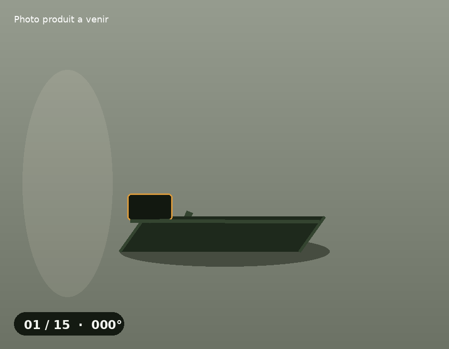

Le problème
Le plat ne remplace pas la montagne.
Sans dénivelé, la puissance ascensionnelle spécifique se dégrade en quelques semaines — même avec un volume d'entraînement maintenu.
Le vélo, le tapis plat ou la salle ne recrutent pas les mêmes filières. Le corps désapprend le geste de la montée.
À la reprise en altitude, le retard se paie cash : fréquence cardiaque qui s'envole, jambes qui brûlent, sensations perdues.
La solution
Le NordicTrack X24, livré chez vous.
Une machine pensée pour le vrai travail de côte, pas pour la marche du dimanche. Installée à domicile, prête à l'usage en quelques minutes.

40% d'inclinaison
De quoi simuler les pentes les plus raides du calendrier trail, sans quitter votre salon.
-6% de déclinaison
Pour travailler aussi l'excentrique et préparer les descentes techniques.
Écran tactile 24"
Programmes de dénivelé, suivi de charge, séances structurées — piloté du bout du doigt.
Livré à domicile
Installation comprise. Vous n'avez qu'à lacer vos chaussures.
Tarif
Une offre simple, sans surprise.
Engagement 6 mois · livraison et installation incluses
- NordicTrack X24 — 40% inclinaison / -6% déclinaison
- Livraison et installation à domicile
- Écran tactile 24" avec programmes de dénivelé
- Reprise en fin de contrat, sans engagement au-delà
Contact
Prêt à retrouver le dénivelé ?
Laissez-moi vos coordonnées, je vous recontacte pour organiser la livraison.
Merci ! Votre demande a bien été enregistrée. Je vous recontacte très vite pour organiser la livraison.